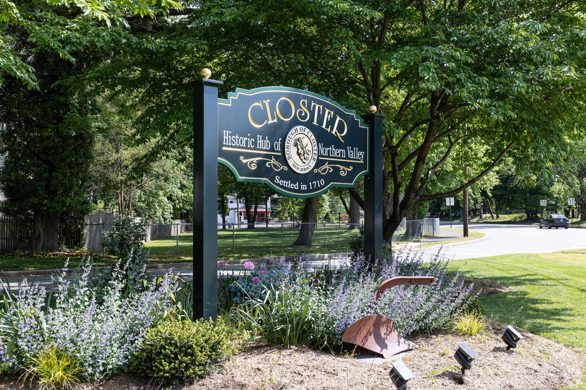

Description: Closter New Jersey is a town located in Bergen County New Jersey. Click on images to navigate this virtual tour! Max Gavalchin grew up in the area and wanted to share his memorable spots and experiences to the public in a fun and interactive way. Feel free to interact while clicking through images and using the key to find the type of event you’re looking for.
